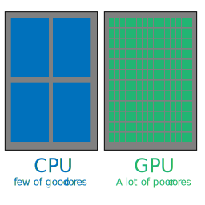
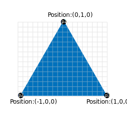
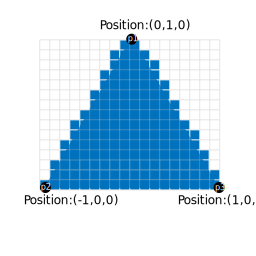

WebGL concepts
Learn WebGL basics
This document is not only for Grimoire.js. All javascript library using WebGL take care of everything written in this section.
Even Grimoire.js provides easy interfaces for users, it is good to know what WebGL actually do and how Grimoire.js use them.
This document is short summary of concept of WebGL for users to understand our library easily.
What is actually WebGL do?
Most of engineers who don’t know WebGL would answer me That is interface for using 3D on browser.
But, that is incorrect. Most important part of WebGL is That is interface for using GPU on browser.
Of course, GPU is mostly used for graphics stuff including 3D. But, the possibility is not so limited.
Graphics stuff
Today, we have good user friendly GUI applications including browsers. All of them are using display.
If that was in game, contents shown on display would be refreshed 60 times or more per second.
That mean 1920*1080(HD) display should calculate 1920*1080*60 = 124,416,000 pixels per second.
And resolutions are growing day by day. Some people have 4K display requiring more computation power.
GPU vs CPU
So, determining each pixel on entire pixels are pretty heavy work for computers. In algorithm contest field, it is sometimes said that O(10^8) is the maximum of the algorithm to calculate per one second.
Therefore human made GPU for calculate each pixel independently.
Most of CPU may have only have 4 cores or 8 cores. But GPU can have 1000 cores or more.
When it come to say about power of single core, core of CPU have better clock than core of GPU.

Parallel computation is not always good solution. It is not working for the task that cannot be calculated independently.
But, in graphics field, there are a lot of tasks can be computed independently in same time.
For example, calculating position of vertices can be done independently. Each vertices should be independent from the other vertices basically.
Calculating color of pixels is also able to be calculated independently.
By using power of GPU for specific calculation, renderer can have great performance. That why we should know summary of GPU not to use renderer wrong way and make decreasing of performances.
Rendering pipelines
Making sure rendering tasks being able to calculated independently, WebGL has specification that make sure how a polygons are calculated, what kind of arguments should be passed to GPU.
And the calculation order and what should do in each stage is called Rendering pipeline.
We need to know how to calculated a polygon to be displayed.

First of all, our renderer pass some information about vertices to GPU. In the figure above, each vertices have positions as argument.
Then, GPU would calculate vertices positions by a program working on GPU(Sometimes called as shader. And the shader works on this stage is especially called vertex shader)
In this time, some transform would be applied to vertices. If the model have skinning property to move joints, each joint positions and rotations must be considered in this time.
After that, GPU execute the task named rasterize which means split each polygons by pixels.

Then we need to calculate each color of pixels. And this task is also using a shader called fragment shader to determine colors for each.

Then the polygon would appear on display by writing the result of rendering into screen buffer.
Rendering arguments
In the rendering pipeline, we have passed some arguments needed for calculating color of pixels or position of vertices.
GPU can accept 2 types of argument. These are uniform variable and attribute variable.
attribute variable can be differed by each vertices. For example, position is different for each vertices. And normals is one of example of this.
uniform variable is the argument cannot be differed by each vertices. For example, if you need texture, in the most of cases, same texture would be used for each vertices.
| Variable type | Differ by | Examples |
|---|---|---|
| uniform | by Mesh(group of polygons) | Color,Texture, some cofficients |
| attribute | by vertices | Position, normal, texture coordinate |
The example is only in typically use case. Most important fact is there are 2 types of arguments and 1 of them is for entire mesh and 1 of them is for each vertices.
Rendering states
In sometimes, we might need to configure GPU to render correctly. For example, after rendering meshes, GPU would blend pixels if the alpha value of the pixel is not 1 and there was another pixel that intersect. We might need to configure rendering state for specifying how to blend each pixels.
There are several configurations(We won’t describe deeply about this section), but this is few example of them.
- Culling
- Depth test
- Blends
- Stencil test
And…?
If you have not used GPU stuff yet, this section might be difficult. But, most important things are what should we input to gain output. And these description can be useful to understand what actually Material or Geometry do.
This is summary of inputs I described above. Only 4 types of them is needed for rendering.
- attribute variables
- uniform variables
- shaders(fragment shader and vertex shader)
- rendering states
Especially for Grimoire, We call set of attribute variables as Geometry.
And the other inputs are Material.
So, if you need to operate input related to attribute variables, you might need to operate Geometry API.
If you need to operate the other input, you might need to operate Material API.